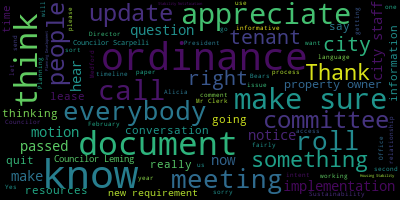
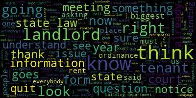
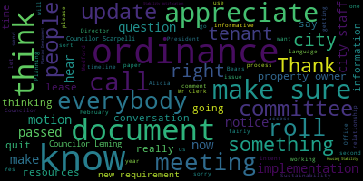
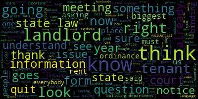

total time: 10.52 minutes
total words: 1836

{kind=link}
total time: 0.7 minutes
total words: 113

total time: 6.43 minutes
total words: 1129

{kind=link}
total time: 2.59 minutes
total words: 462
[Collins]: Planning and Permanent Committee, February 28, 2024. This meeting will take place at 6 p.m. in the City Council Chamber, second floor, Medford City Hall and via Zoom. Mr. Clerk, would you please call the roll?
[Imw9nvnGj3M_SPEAKER_07]: Absolutely. Councilor Callahan.
[SPEAKER_00]: Present.
[Imw9nvnGj3M_SPEAKER_07]: Councilor Lemmie.
[Leming]: Present.
[Imw9nvnGj3M_SPEAKER_07]: Councilor Scarpelli. Present. President Bears. the meeting is called to order. This is a meeting of the
[Collins]: Planning and Permitting Committee. The action and discussion item for this meeting is paper 24-042, a resolution to discuss the implementation of the Housing Stability Notification Ordinance. And we've invited some members of the Planning, Development and Sustainability Office that are the staff that are tasked with implementing and enforcing this ordinance to be with us here tonight. I just want to make it clear, because this is a resolution to discuss the implementation of an ordinance that was passed around this time last year. The Housing Stability Notification Ordinance is an ordinance that was passed in February 2023 that created a new requirement for property owners of properties where there are tenants, that at the beginning and end of any lease, that they should send a document that is created by the City of Medford detailing tenants' resources and tenants' rights to those tenants at those given start and end times to any lease. That is the ordinance in a nutshell. It's fairly simple. We had a fairly lengthy process crafting the ordinance between 2022 and 2023. Now it's been about a year since we passed it, so the purpose of this meeting is to check in with the Planning, Development, and Sustainability Office that have been working hard, thinking about how it makes sense to roll out this ordinance, going through the necessary steps to put together that document, to draft it, to run it by legal counsel, and to be thoughtful about how to make sure that everybody in the community that ought to know about this new requirement does before we officially begin implementing and following up with people to ensure that it's being complied with. So with that, I'm going to open it up to preliminary comment from my fellow councillors that I'd love to hear just an overall update from our city staff. Any comments from my fellow councillors? Hearing none, I'd be happy to turn it over to Director of Planning, Development and Sustainability, Alicia Hunt, and our housing planner, Aditi, to give us an update on the You know, I know that there's been a lot of good work being done in the planning office to develop this document and to think through how we're gonna roll it out. So I'd love any sort of update that you can share on that process.
[Hunt]: Good evening, I'm Alicia Hunt, the Director of Planning, Development and Sustainability. And with me tonight is
[SPEAKER_00]: Good evening, I'm Aditi Mugur. I'm the housing planner at the Office of Planning, Development and Sustainability.
[Hunt]: So I just wanted to start by, Councilor Collins had asked for an update of what had happened. And I feel like, so you're aware, Aditi started with us in January, and obviously we've been working on this since long before that. We had a housing planner over the summer who unfortunately, due to personal circumstances, had to relocate back to Pennsylvania. So Barbara started this process. She, along with interns and other staff in the office, created the Housing Stability Notification document, the document that the Tenants' Rights and Resources Guide. We spent a good amount of time working with plain language. guidance with the community liaisons to talk about how can we use language that is understandable by everybody and things that will translate well into other other things as well as getting information from what are other communities sending in their tenants rights and resources documents that are out there. So that occurred over the summer. We worked very hard on formatting it in a way that made it very accessible. We're happy to log into the Zoom and share it on the screen if you'd like to see it. We did send it to legal counsel and they have given us two kinds of feedback. One is easy to accept feedback. that we've just made the changes and the other is where they've asked for or they are recommending language that our concern is it's making it not understandable and so we're still sort of working through those very specific suggestions to make it understandable by the public. But the document is essentially done including, I wanted to just mention the section, right, so there is a section on the first page that says translations in Spanish, Brazilian, Portuguese, Haitian Creole, Mandarin Chinese, Vietnamese, and Arabic are available on the city website with the URL. And that sentence is translated into each of those languages. So if you read that language and you pick it up, you look at it, there is a box on there that has that sentence in the language that you speak. and then you can go to the URL and get the translated version of it. So as Councilor Collins had said, the intention was to take this, so a landlord is supposed to give this to the tenant upon the start of their tenancy. But this document could be updated over time to reflect changes in rights. So what we've been talking about is that we don't necessarily want to send this document to the landlord because they might just hold on to it. and photocopy it. And what we'd like them to do is send them a letter that says, this is the ordinance. The ordinance says you have to give this document to your tenant. You can get a copy of this document on the city's website at this URL. And if your tenant speaks one of these languages, we have it in that language on this website for you to download and give to them. We've also been thinking that we'd like to send it to all the real estate agents in Medford as well, so they're aware. So then the next question is, how do we get it out to landlords? And that's something we've been discussing among staff in the office. I can stop there because that's the history, that's what has happened, and now the next step is getting it out. So.
[Scarpelli]: Can I just chime in, Madam President, if I can? Absolutely. Thank you, and I understand why we're doing this, but I think that some of the confusion's coming in. If you could shed some light, I know that that Section 31, Chapter 186 of Mass General Law, that all landlords must deliver an accompanying form when issuing a notice of quit for nonpayment of rent and residential tenants. I think, so the confusion is that I believe, are we saying in context that we're not seeing that happen and we want to make sure that we're doing our part as a city? Or because there's already, what I've been told is that the state law is already in place. So there's a required notice to quit an accompanying form that the landlords must provide a form of notice to quit as of April 1, 2023. That's when it was implemented. The landlords that issue notice to quit for non-payment of rent to a residential tenant must also give a tenant a completed accompaniment form that details information on rental assistance programs, applicable trial court rules, standing orders, emergencies, so on and so forth. I could just keep on going, but as the questions that I received were that if this is already in place in the state, You know, what I don't see is it is these forms in multi language languages that we're offering. So I think it's important to hear that is, are we doing this in conjunction with the state law to make sure that we're going above and beyond as a council? I think that's the question that landlords are asking. We're already doing this by state law. Are we doing something we're not supposed to? Or is this something now we can do the metric ordinance instead of the state ordinance? So I think just getting that clarification would be good.
[Collins]: I'll quickly chime in, and then I'll turn it back over to our subject matter experts. My understanding, and I appreciate that question, Councilor Scarpellirilli, because I think that's an important point to clarify. My understanding is this ordinance adds something to that process. So the state law creates a requirement for that document and that required notice and resources to be sent when there is a notice to quit. This ordinance says not necessarily just when there's an ordinance, sorry, when there's a notice to quit, but when a lease is beginning or when a lease is ending for other reasons. Let's make sure Right. If there's a foreclosure happening, let's make sure that the person occupying that home or about to occupy that home knows their rights and has these resources in those other scenarios as well, building on top of the state law that is specifically about notices to quit. Did I get that right, Director?
[Hunt]: Yes. So I was actually just so Our ordinance is 49-34, or in section 49-34, the notice is both at the start of the tenancy and at the end, and it's for any reason. And if you want to switch over to the document we have. So the document we have, our document, is not just a document. about their so this also provides some resources for them as well. So sorry, I want to make sure I'm heard on the thing. So the it includes information about rental assistance funds, metro housing, Boston, on the housing authority, like what are some resources that if they are in fact leaving, they can have available to them as well. And the one of the things that we like about this is that we can put any Medford specific programs on to here as well. So the state form, this would accompany the state form for a notice to quit, but it would also be given to them when they start and if the building is sold or something else is happening.
[Collins]: Councilor Leming?
[Leming]: Just a quick point of information from Councilor Scarpelli. Could you repeat the section of the Mass General Law that you mentioned earlier?
[SPEAKER_07]: Again, I apologize for that.
[Scarpelli]: When a state law is in place, and we have, I understand the fact that we're putting in an ordinance to beef that up, but when it goes to a judge, would they look, they wouldn't look at what we're implementing. Does it hold muster if it goes to a court? like with the state ruling or what the state's asking and then what we're asking.
[Hunt]: I'm not sure I understand if somebody challenges our law and it goes to court or if the tenant is being evicted and goes to court.
[Scarpelli]: Well, if it goes to court, is it a binding law that it would be using it as either defense or, you know, you're battling it goes to a court for eviction? You know, what a judge, right? Look at that as a binding bind? Is it binding in the eyes of the court?
[Hunt]: So I think, am I correct in understanding you to be saying if somebody is being evicted and they weren't given this document, could their lawyer say to the judge, but I wasn't served proper notice because I wasn't given this document?
[SPEAKER_07]: Right.
[Hunt]: I would say that is not the intent of this document. Okay.
[SPEAKER_07]: All right.
[Hunt]: Right.
[Collins]: Yeah. And if I, I appreciate, um, I, One of the goals of this meeting is just a general update of where we are at in rolling out the implementation. I think the other, especially now that it's been a year since we were talking about this in public meeting, is to have these clarifying conversations about what is the intent of this and what does it do and what are the consequences and what aren't the consequences. So, you know, as the sponsor of the original ordinance now passed, I think that there is nothing about the notification document that would affect eviction proceedings at all. I don't think that there's anything about the notification document that would... The intent of the document is to be something that can go to a tenant and say, Here's some info. If you have an issue, here's who you can call. You have a question, here's who you can call. If you have a question and this is the language you speak and it's not English, here's who you can call just to be informative. And the intent of that is to really make sure that people are empowered with information before they have any sort of issue or problem, which is intended to be. beneficial for a tenant or property owner, everybody in that relationship. So on the enforcement side, I don't think this would ever impact, you know, should a notice to quit be issued. If there's another condition that prompts an eviction, this would not affect that timeline. And I think we put it very clearly in the ordinance. You know, this is something that is intended to be an informative and educational ordinance, not something that we're going to be looking and looking for evidence of non-compliance to issue tickets, but rather to be something that we can follow up and saying, let's make sure that everybody gets the information before they need it, and that our city staff can be working proactively to make sure that this is getting out to the community in an accessible way. So I really appreciate the opportunity to clarify that. Thank you.
[Hunt]: So Madam Chair, I may share with you what that on this document, it's not just about evictions. One of the things that it seems to us that a good tenant is an educated tenant, they know what their responsibilities are and the landlord's responsibilities. So there are some frequently asked questions on here, including things like what can I be charged to move into my home? Can my landlord increase my rent? Is there a limit? How should my security deposit and last month's rent be handled? When can my landlord enter my home? How do I get my landlord to make repairs? Can I be charged for utilities? Can I sublet or share my unit with another renter? So like these are all things that tenants should know. And some sometimes you feel like, well, of course, people know the answers to this. But actually, things are different from state to state and country to country. And somebody who's always grown up in a single family owner occupied home, they actually have no idea about the answers to some of these questions. So the idea of the document is, in fact, that it is designed to help somebody even as they're moving in, and not just as they're leaving. So if I might, to that end, we started to really, in our office, think about how do we get this out to the landlords so they would know that they need to give this out. And the more we talked about it and consulted people who understand real estate law, and we work with the assessor's office to understand what data people have, we kind of came to the realization that we think we should send it to everybody who owns residential property in the city of Medford. And that is because you might own a single family home. And two months from now, you might relocate unexpectedly to Virginia and decide to rent your house. And now you are a landlord and you weren't before, right? Anybody could suddenly become a landlord. And it may be that you live next door to somebody who didn't notice this or forgot about this notice and didn't share it to their tenants and their tenants are your friends now. And now you can actually say, well, actually, you know, I know about this notice. It's on the city's website. And you can share that information that it exists. So sort of getting it out there into the community as a known document that exists feels like it would benefit everybody. And when we try to say, how could we tell who was an It is extremely difficult because we do not have a rental registry to know for sure which properties are being rented. When is the landlord actually still getting mail at that property address? That happens. If you own a two-family and your owner occupied, you are in fact getting mail at that address. So we realized that filtering that out was becoming difficult. And the other thought, though, is that it's not clear to us that we actually want to send this notice to everybody because it should be updated as our programs change and as the law change. So what we're thinking about sending is a letter that says, This is this new ordinance that was passed in the city of Medford. And if you are a landlord, you should download this document and you should give it to your new tenant. And we were thinking that that would get out to everybody. People would be all go to the website and look at the document and that that would be more beneficial than just sending this flyer to some limited group that we were having trouble figuring out who are the landlords in Medford.
[Collins]: Thank you, Alicia. I appreciate that approach. I think that, like we said, the goal of this is to be informative, if we all recognize that a healthy tenant-landlord relationship is one where everybody knows what their responsibilities are and their resources are, tenants included, and know what to expect and what to expect of themselves. And that's the best recipe for a healthy and unproblematic relationship. I saw President Bears, Councilor Leming, and then back to you, Councilor Scarpelli.
[Bears]: Thank you, Madam President. Um. I know the rental registry conundrum has been a real issue in terms of the short term rental piece of things as well. Talking to Commissioner So I know that that's an issue on that question as well, because it's so hard to know who's doing Airbnb. How do we figure it out? And Airbnb won't tell us. So interested in some solutions around that as well. Just had a question on the content of the notification. Does it note that these are like the state law minimums or maximums, but then also note that like check your lease because your lease may have, you may have signed something that has different requirements. Like for example, like if you don't have separate meters at the house that the landlord has to pay for the electric, but if you do have separate meters, then you can sign a lease that says I have to pay for the electric, right? So there's certain kind of nuances. And I think it's always important to remind folks that this is what the law says, but check your lease as well. Is that in there?
[SPEAKER_00]: Well, it doesn't specify to check the lease, but there's a question on can I be charged for utilities? And then there's response saying that your landlord must pay for water, gas, electricity, hot water and heat unless you agree to pay for those in your lease or rental agreement. Great. So, yeah, I think we could include a question which specifically talks about the lease. and to check that during the rental agreement.
[Bears]: If it's built into the answers, you know, I think that's, you know, as long as it's in, I can go either way on it. I think it's just a good reminder. Obviously, it doesn't apply to everything, but you know, if all the questions where it applies, it says, and be sure to check your lease, because this is, you could have signed something that says something different. I think that that's sufficient.
[SPEAKER_00]: Yeah, that's a good suggestion.
[Bears]: Thank you.
[SPEAKER_00]: Councilor Lennon.
[Leming]: Yes, thank you. So I think that a rental registry would be be an excellent idea. The two things that I just like to get some information on which I believe Council President Bears touched on a little bit here is first of all, how much would it what would be estimated cost and effort be to send out the notification every Property owner in the city and what would be the capacity of your office? Do you estimate to design and upkeep a rental registry? At this time.
[Hunt]: So rental registry would not be managed by our office. It would certainly have to go through the building department, which is where the Airbnb goes through and they do building permits. So it would be get built into the citizen serve system that exists. I could not speak to what the workload would be on that. It is definitely something that has been recommended by some of our previous sanitarians. It's something worthy of discussing with our new building commissioner as well. The other question was the cost of the mailing. So it would be our intention, right now, we are talking to the treasurer about not doing a separate mailing, but actually, can we include it in the tax bill? So we know that we could send it in the water bill. I know that putting a one-pager in the water bill, color one-sided is usually, about $3,000 because that's what I do with the rain barrel program every year. I am also aware, because of that, that the water bill does not go to all property owners, that you can opt out and you can get it electronic only, and there is no way, last I checked, which would have been this time last year, to attach a notice to the electronic water bill. So it would actually only go to those people who have not yet opted out. That is why we're pursuing, we've reached out to the treasurer about doing it in the tax bill. It seems to us that it is possible with the approval of the mayor, which would be straightforward, but we're just clarifying, because there was a little confusion whether she was saying, sure, you can do it in the water bill, or whether she was saying, sure, but we usually do it in the water bill. We just want to make sure there are no cross signals there. I'd expect that if we're sending just the letter, that it's going to be on that order and our office can cover that amount this semester, this spring. I don't know why my brain is in school land.
[o9F0qYH9Geo_SPEAKER_05]: Kids.
[Hunt]: Yes.
[o9F0qYH9Geo_SPEAKER_05]: I just paid the bill, didn't I, Alicia? I just paid John's job.
[Collins]: Is that a cover your questions?
[Hunt]: Yes, sir. Did I get them all?
[Scarpelli]: Yes, thank you. Thank you. Similar similar questions my colleagues brought up. I think that it's funny when we see some of the biggest issues we have is the policing and the notification and who's doing it. And, you know, it falls back in an office that's undermanned and overworked. But I think that that's that's I think that's the, the, the concern is making sure the word gets out so. thinking, you know, I know that landlords don't always oversee their properties. So you look at real estate agents, and we have, we have a lot of great real estate agents that are responsible, and maybe finding a way to marry them to also share that information to share to their tenants if that's their will, or is it just something that goes right to the homeowner, and it leaves it up to them? So I think right now the, the biggest issue is that I see it's the intent is awesome, getting it out there, making sure that people are informed in this, you know, so one of the questions what is, is a redundant? No, it isn't redundant, because the state law looks at one thing, but we're looking at multiple factors that pay into a landlord. tenant agreement. So, you know, I, I was fortunate that I had, we had the best landlord in my life. And that was my dad. And he had, we had landlord, we were, we had renters that lived with us for 15 years, and bought their home, another 15 years, bought a home. And now my dad's been gone seven years, the tenants that are still there. they've been there for about 12 years now. So there's a lot to say about a good landlord tenant relationship. And, but I think that the biggest thing is really going to be that I want to focus on as we move forward. And this is really now bringing in the building department saying, how are we going to do this? You know, it's, it's, like you said, Alicia had it all right here, you know, the tax bill, you know, I, the water bill is right because I don't pay the water anymore I go right online and do it so I wouldn't get that information so I think that these are the these are the big issues as we're vetting that's what we have in these meetings that people have to understand because I know that the the intent that people thought this meeting was for is we're going to do rent control again and uh I said so this is once again not that meeting I appreciate Vice President Collins clarifying that and and everybody understanding that This is a journey that we still have to vet out some very important pieces. But again, I think we look at the situation we had last year, it gives us an avenue to support our renters and our landlords. So they're prepared. So thank you.
[Hunt]: Madam President, if I might, it has come to my attention, one of the things I've wanted to do for many years is to engage with the real estate agents who do business in Medford. And I've never been aware of a way to get that, the list, how do we, but it has actually come to my attention that we can get the list of real estate agents licensed doing business in the city of Medford. So we are gonna connect and get that list. And so then we could also, I, as of yet, don't know if that would be attached to email addresses, it would be my preference to email stuff out to everybody. Obviously, we can't just do that with property owners. But if not, then we would paper mail it to them as well. So yeah, so we would really like to work with as soon as we said that actually Brenda who does energy and the energy efficiency in our office and can I get that list too, I want to work with real estate agents. So, so hopefully we'll start a new relationship there.
[Collins]: That's great. Thank you, Director. And it's exciting to hear about different ways of collaborating with, you know, not just property owners, but also real estate agents in the city to make sure that all these initiatives and all the good work that I think everybody wants to be doing, that we can be staying on the same page and synthesizing about that. I'll go to the housing planner and then Councilor Bears.
[SPEAKER_00]: Yes, Madam Chair, Councilor Bears. I'd just like to clarify on the question of checking lease before signing the agreement. Probably that's not there in the notification. It's because the notification is handed only after the lease agreement is signed, but there will be details on utility charges and what happens if they are provided a notification to quit. Yes.
[Bears]: Yeah. Okay, great. And just my other question. folks who pay their taxes through their mortgage, which is a lot of people in the city today. So yeah, so there's still some people aren't open to it. Because that's what I hear.
[Hunt]: I was debating that myself. Yeah. Because I was thinking, you know, my mortgage is paid my escrow account, but I open it eventually. Some of our thought was that if there was extra pages in there, you might notice that something's weird about it and be more likely to open it. And honestly, it's an interesting question. Would people be more likely to open a letter from the city addressed to them at their address? than something that is clearly their real estate tax bill, right? Like what are they more likely to open? And that's actually a really tough call, which is why if it's just a separate letter, it incurs significant additional costs to mail it out. And it's significantly cheaper to do it through the real estate bills. But I think that it would be good to do additional outreach to like put out a press release that says this document is now available and to start some buzz about it, that it's available. Here's how you get it. This is what's on it and stuff through the social media, the other avenues that we use.
[Bears]: And I'm guessing these are probably questions for the Treasury Department, or even for Commissioner Vandewaal, who was surprised that he runs the mail metering system, when he was like, I've been trying to fix the mail machine. I didn't realize that was my job. I'm guessing we just print this on the bulk envelopes that go out, and there's no way that we could put like a stamp on. I'm guessing we don't buy envelopes for the tax bills every year. And could we put something on it that's like, please open, there's also city information inside, like on the envelope itself.
[Hunt]: That's an interesting question. Actually, the way our tax bills go out is through a mailing house. So we send PDFs to a mailing house company, and they do the whole thing. Those never actually come through City Hall.
[Bears]: Okay. It may be interesting if they could special print on the envelope, maybe.
[Hunt]: Don't charge us for it. We'll ask for a price.
[o9F0qYH9Geo_SPEAKER_05]: Envelopes, when you open them up, they... Yeah, yeah, yeah, exactly.
[Bears]: Read this, yeah, yeah, yeah. Prize inside. You won't like it, but it's still a prize. I figure they have to print the return address on it anyway, so I don't know.
[Hunt]: Honestly, there's probably one sitting on my dining room table unopened. Unopened, exactly.
[Collins]: All right, thank you. Thank you, President Bearsens, and I appreciate, you know, when we were developing this ordinance over the course of several months leading up to, I think we passed it in February 2023, most of our conversations were centered around how do we make this something that is accessible, that people can understand, that people who don't read English can language, can access in the language they understand. Essentially, how do we make this tool that is meant to be informational, how do we make it easy to access? And I really appreciate, you know, now that we're talking about I appreciate that City staff is taking the time to make sure that this is done right in that same spirit of we want to make sure that everybody who needs to know that this is a new requirement hears about it. And I appreciate that we're thinking through the communication channels that the city already uses, that the conversation is starting with. What can we use to physically get this into people's hands? Because we know it's probably a fraction of all Medford residents and property owners that are on the city's social media channels and accessing what local news we have left. And so I appreciate that those are, you know, perhaps going to be supplementary tools to getting this information out, but that primarily we're thinking through. you know, what's the best mailing to use so that this is cost-effective that we make sure that people hear about it. And I was especially happy to hear that staff is thinking in the direction of, you know, the mailing that will go out to property owners will include sort of a signal, like, there is a new requirement to send out a document. This is not that document. That document lives online. Like, here's how to access it. Here's how to print it out. Here's how to send it to the library and get it printed out, rather than sending a static document that then we'll get photocopied until it's illegible or we'll get updated and people won't benefit from that updated information and so on. Councilor Scarpelli.
[Scarpelli]: I think that we're moving in the right direction, but I think that we keep this in the committee and actually call for a meeting with the building department and try to see once we gather more information with what our office of planning is doing, and we can, like we said, these meetings are great, and what they're intended for is to vet these processes out where, you know, you get phone calls as a Councilor Tseng, we're doing something today. It's like, no, understand there's a process, and these small processes hopefully get us to a resolution where everybody looks at the final product and say, this is how it benefits everybody. no one's out to get anyone this isn't a conspiracy theory this is something that's hopefully going to work so i think that the biggest question right now is how we how we get the information out and then um in the building department how we're going to oversee that uh this that's that piece of it so so i would recommend we move with that as a as a motion thank you councillor scarpelli
[Collins]: Do I have a second on the motion to keep the paper in committee and reconvene for another update, perhaps on timeline as we get later into the spring?
[SPEAKER_07]: Second.
[Collins]: Second from Councilor Leming. And just to reiterate, you know, the content of this meeting so far on the ongoing implementation rollout of the Housing Stability Notification Ordinance, we've had a, I think, a really helpful update from city staff where we're at with the timeline. What are the questions still on the table for finalizing the document and then alerting everybody who ought to be alerted about it? I know that there's some energy to try to get the document finalized and begin to roll that out, you know, this spring, by June, I think. This is a committee that meets often. It meets every two weeks. This is a fairly straightforward conversation because we've talked about this ordinance so many times before. I just say that to note that even though there's a lot of competition for meeting dates in this committee in particular, because we're doing zoning in this committee, I'm sure that this is something where we can have a quick update on an evening that's shared with other topics. So on the motion of Councilor Scarpelli, oh, peanut gallery over here. On the motion of Councilor Scarpelli to keep the paper in committee seconded by Councilor Leming, all in favor. Oh, sorry, roll call.
[Imw9nvnGj3M_SPEAKER_07]: It's to keep the paper committee call for a future meeting and then with the ability for them to reconvene later.
[Collins]: Yep.
[Imw9nvnGj3M_SPEAKER_07]: Okay, great. Got that.
[Collins]: You're ready. Sorry, I forgot how to call a roll call vote. Mr. Clerk, please call the roll.
[Imw9nvnGj3M_SPEAKER_07]: Councilor Kelly.
[SPEAKER_00]: Yes.
[Imw9nvnGj3M_SPEAKER_07]: Councilor Leming. Yes. Councilor Scarpelli. Yes. Yes. Vice President Calls.
[Collins]: Yes. Five in favor, none opposed. The motion passes. Is there any further comment from councilors or members of the public that would wish to speak? Or last words from city staff for now. Motion to adjourn. Seconded by President Bears. Mr. Clerk, please call the roll. And while the clerk is getting ready, I'd just like to say thank you again to Alicia and Aditi for working with us on developing this ordinance in the previous term and for doing such a thoughtful job of implementation in this one. We appreciate it.
[Imw9nvnGj3M_SPEAKER_07]: Councilor Callahan.
[Collins]: Yes. Matt, you got to stop doing that.
[Imw9nvnGj3M_SPEAKER_07]: Yes. Councilor Scarpelli. No. President Bears. No. It's now a typo.
[Collins]: Yes. Meeting is adjourned. Thank you, everybody.
|
total time: 10.52 minutes total words: 1836  |
total time: 0.7 minutes total words: 113 |
total time: 6.43 minutes total words: 1129  |
total time: 2.59 minutes total words: 462 |
{kind=link}